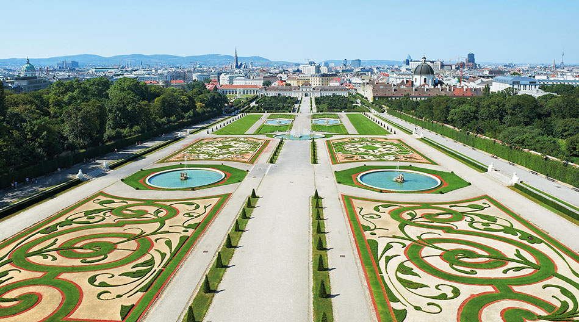
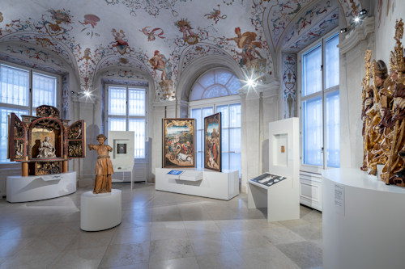

About the Virtual Exhibition
A digital storytelling project inspired by the collections of the Belvedere Museum in Vienna, created as part of the MMMM Web Foundations course at the University of Bologna.
Project Overview
This virtual exhibition was created as part of the Information Modeling and Web Technologies (MMMM) course at the Master Degree in Digital Humanities and Digital Knowledge, Alma Mater Studiorum – Università di Bologna (A.Y. 2024–25). It is supervised by Professor Fabio Vitali.
The project's purpose is to explore the intersection of web development, typographic design, and digital cultural heritage. Specifically, it investigates how structured metadata, narrative ordering, and switchable visual themes can transform a static collection of artworks into an engaging, multi-layered visitor experience.
The Collection
The exhibition features 18 artworks drawn from the Belvedere Museum's permanent collection, spanning approximately 150 years of Austrian art history - from Franz Xaver Messerschmidt's enigmatic Character Heads (c. 1770) to Egon Schiele's expressive landscapes (c. 1917). The works are arranged across six thematic rooms reflecting the major movements of the period: Baroque/Early Austrian painting, Biedermeier & Realism, Impressionism & Landscape, Vienna Secession & Klimt, Expressionism & Schiele, and Women Artists & Modern Dialogues.
Design Philosophy
Two distinct visual themes were designed, each rooted in a precise historical aesthetic associated with the exhibition's subject matter. The Classic theme draws on 19th-century Viennese museum catalogue design and the Biedermeier era's warmth and domestic refinement. The Modern (Secession) theme is inspired by the Vienna Secession movement of 1897–1910, particularly the graphic language of Ver Sacrum magazine and the gold-leaf surfaces of Klimt's paintings.
All design decisions - typography, colour palette, spacing, layout - are deliberately grounded in the visual cultures they reference. Full rationale is provided in the Documentation.



What's Inside This Exhibition?
🖼 18 Artworks
Paintings, sculpture, and modernist works across six curated rooms, covering 150 years of Austrian art.
📚 Multi-Level Texts
Up to 5 descriptions per artwork, tailored by length, competence level, and audience tone - from playful introductions to scholarly analysis.
🧭 Two Narratives
A chronological Timeline narrative spanning 150 years, and an Emotion & Expression thematic pathway exploring psychological intensity in art.
🎨 Two Visual Themes
Switch between a warm Classic (XIX Century museum) and a dramatic Modern (Vienna Secession) aesthetic, each with distinctive typography and colour.
Course Context
This project was produced for the Information Modeling and Web Technologies exam within the Master's programme in Digital Humanities and Digital Knowledge at the University of Bologna. The course, taught by Professor Fabio Vitali, focuses on the design of information architectures for digital cultural heritage, the deliberate use of typographic themes, and the structured modelling of multimedia content.
All artworks reproduced in this site belong to the Belvedere Museum, Vienna. Descriptive texts were created for educational purposes and do not represent official museum interpretations. See the Disclaimer for full copyright information.